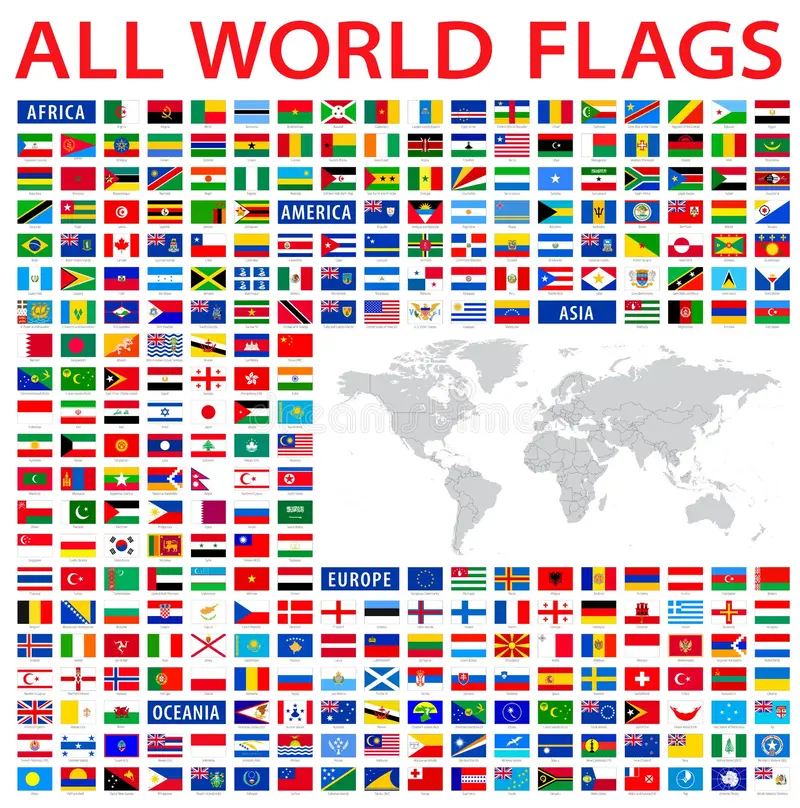

I am interested in Data, AI, and Analytics and how technology can be used to solve real-world problems.
As I begin my career, I hope to continue developing my skills and gain meaningful experience in this field.
Created an AI agent using Microsoft Copilot Studio to help manage and automate client engagements.
Designed the agent to orchestrate backend tasks, including generating meeting summaries from transcripts and organizing important engagement information.
Automated reminders for upcoming meetings and other tasks to help engagement teams stay organized and prepared.
Gained hands-on experience with AI, automation, and developing technology solutions for real-world business needs.
Meeting Minutes Generator
Created an AI agent using Microsoft Copilot Studio to automate the creation of meeting minutes.
Designed the agent to take meeting transcripts and generate organized, branded meeting minutes.
Automated the process of identifying key discussion points, action items, and important information from meetings.
Gained experience using AI and automation to improve efficiency in a professional setting.
Country Flag & Fact Generator

Developed a Python program that allows users to select a country and receive its flag and a fun fact.
Used public APIs to retrieve country information and display the results to the user.
Worked with API responses and data in Python to dynamically generate information based on user input.
Strengthened my skills in Python programming and API integration